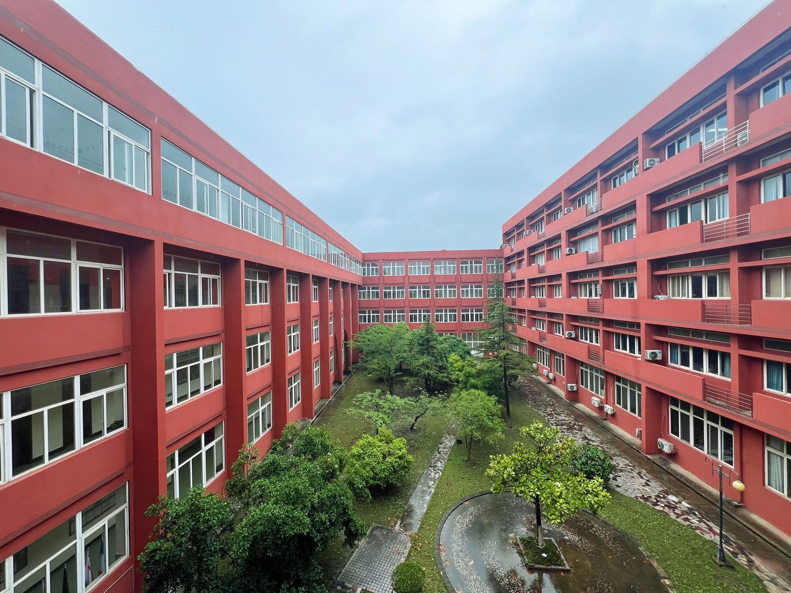
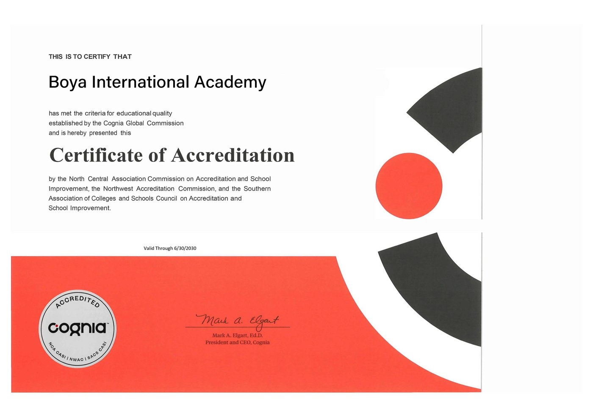
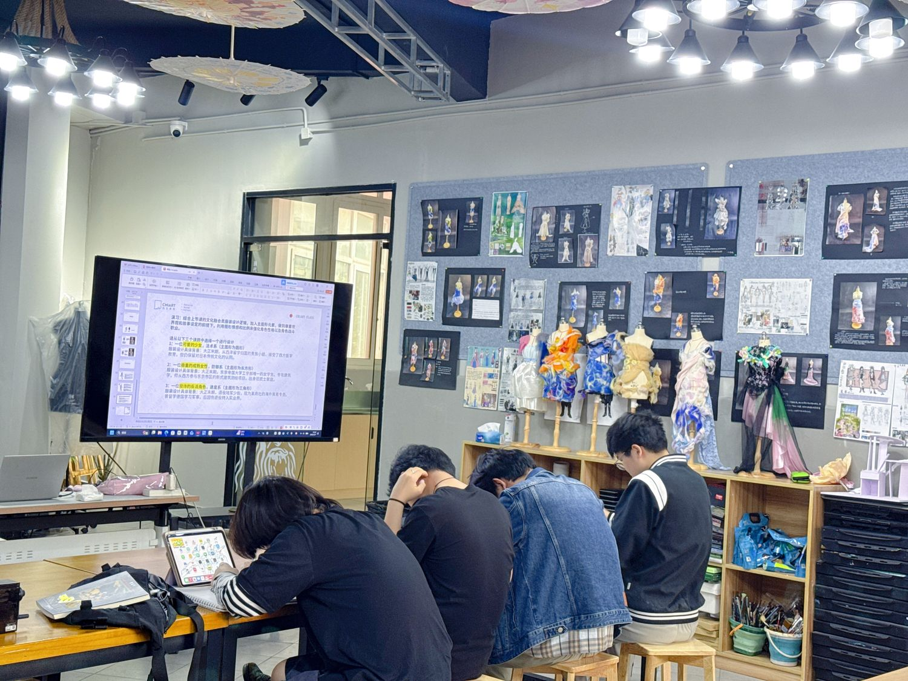
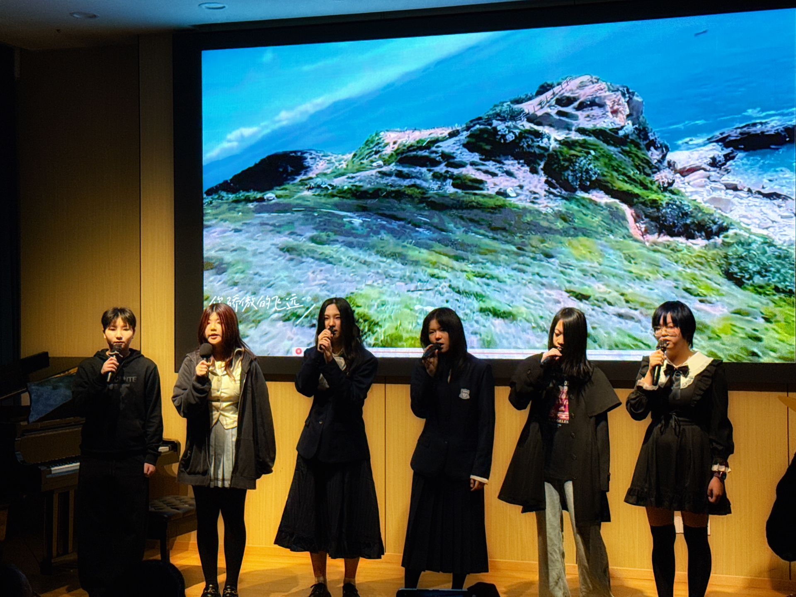

About Us
A School Built Around Its Students
Founded in 2015 in Nanhui University Town, Pudong — a licensed private school, accredited by Cognia.
Who We Are
Introduction to Boya International Academy
Boya International Academy (Shanghai Boya School), founded in 2015, is situated in Nanhui University Town, Pudong New Area, Shanghai. The school holds a duly authorized educational license granted by the competent education authorities and operates as a private institution under the direct jurisdiction of the Education Bureau of Pudong New Area.
Boya offers an American high school curriculum for Grades 10–12 alongside its Korea pathway and Joint Examination programs. This English website focuses on these international tracks; the school additionally operates domestic-track programs, which are introduced separately in Chinese.
Guided by our founding principle — “All for the Well-being of Every Child” — the school has been recognized as a “Shanghai Safe and Civilized Campus” (上海市安全文明校园).

Accreditation
Accredited by Cognia
Boya International Academy holds a Certificate of Accreditation from Cognia — the globally recognized accrediting body formed by the North Central Association Commission on Accreditation and School Improvement (NCA CASI), the Northwest Accreditation Commission (NWAC), and the Southern Association of Colleges and Schools Council on Accreditation and School Improvement (SACS CASI).
The certificate is valid through June 30, 2030. Accreditation status can be verified through Cognia’s official registry at home.cognia.org/registry.

School Identity
Key Facts
- School Name
- Boya International Academy (English) · 上海博雅学校 (Chinese)
- Founded
- 2015
- School Type
- Private senior high school, operating under a duly authorized educational license
- Curriculum
- American high school program (Grades 10–12, 21 credits) · Korea Pathway · HMT Joint Examination preparation
- Accreditation
- Cognia Certificate of Accreditation — valid through June 30, 2030
- Governing Authority
- Education Bureau of Pudong New Area, Shanghai
- Location
- No. 68 Qinfen Road, Pudong New Area, Shanghai, China — Nanhui University Town
- Recognition
- “Shanghai Safe and Civilized Campus” (上海市安全文明校园)
- Pathways
- US Pathway (American high school program, Grades 10–12) · Korea Pathway · HMT Joint Examination · further routes to Japan, Singapore and Malaysia. Domestic Gaokao tracks also operate within the school and are introduced separately in Chinese.
What We Offer
Two Tracks, One Goal
Our curriculum is structured around two main tracks. The Liberal Arts & Sciences track reinforces core subjects — languages, mathematics, natural sciences and social sciences — to build a solid academic base. The Arts track provides professional training in fine arts, music, theatre and film, alongside aesthetic cultivation and portfolio guidance.
Our international faculty delivers targeted language instruction, overseas study planning and application counseling, striking a balance between examination preparation and overall competency. We design a personalized academic path for each student — whether in STEM, humanities, business or fine arts — integrating language acquisition, subject mastery and end-to-end application support, toward universities in the United States, South Korea, Japan, Singapore, Malaysia and beyond.
Explore Academics

Come and Visit the Campus
We welcome prospective families to tour the school and speak with our admissions team.